Samme Glasset, mer rom.
En kort film som tar dere gjennom spisesalen, forbi maskinene og ut i bakgården.
Hos Glasset er restauranten vinkartet. På Nora får vinen et eget torg i hver del av huset.
Folk kommer for et glass og blir for kvelden. Vi vil at du skal kunne gå inn fra gaten, se maskinene med en gang, smake deg frem og finne en plass som passer selskapet ditt. To venninner ved vinduet. En gjeng ved langbordet. Et par i bakgården når det blir mørkt.
Fri sone rundt maskinene, så ingen står i veien for hverandre. Luftig å gå rundt, lunt ved bordene.
Du kjenner igjen Glasset på maskinene, fargekodene og tonen. Nora får sitt eget uttrykk med betong, gammelt tre, kobber og varmt lys.
Lys og lyd i scener. Rommet skifter karakter gjennom dagen uten at noen må flytte seg.
God akustikk, så praten holder også når musikken går opp en lørdag.
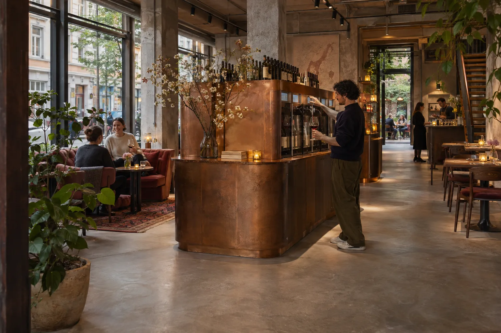
Dagslys og hvitvin.
Smaking ved maskinene.
Lyset senkes over bordene.
Musikken opp, lyset ned.
Det turkise hjørnehuset ved Metodistkirken, med himmelmaleriet på gavlen. To etasjer midt på Løkka, store vinduer mot gaten og en skjermet bakgård bak. Trappen i midten av huset samler etasjene.
Tegnet i byggets ramme etter Glassets plantegninger: vegger, vinduer, dører, toaletter, trapper, bar og kjøkken der de står i dag, og den nye trappen midt i lokalet.
Skissene bygger på Glassets plantegning fra 9. november. Mål er omtrentlige, og møbleringen er et forslag.
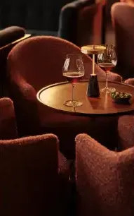
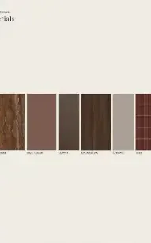
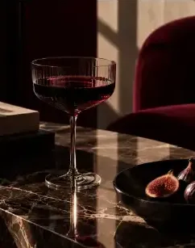
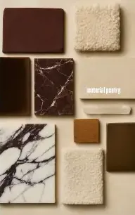
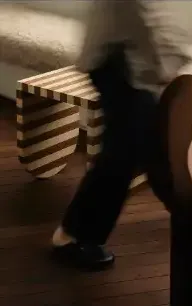
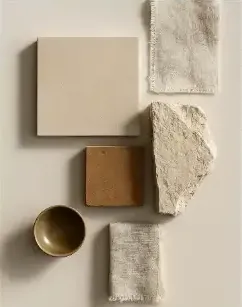
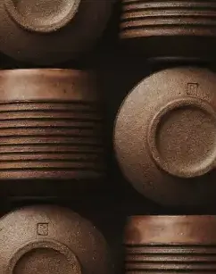
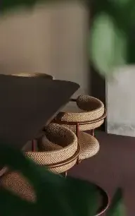
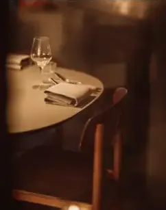
Ca. 40 plasser under ranker og lyslenker, med egen værbeskyttet vinmaskin langs veggen. Varmelamper og parasoller gir flere kvelder fra april til oktober. Fra første etasje ser du rett ut, og du skjønner at det finnes mer.
Varmt lys over bordene, lyden fra gaten forsvinner, og det er fortsatt fullt når det blir mørkt.
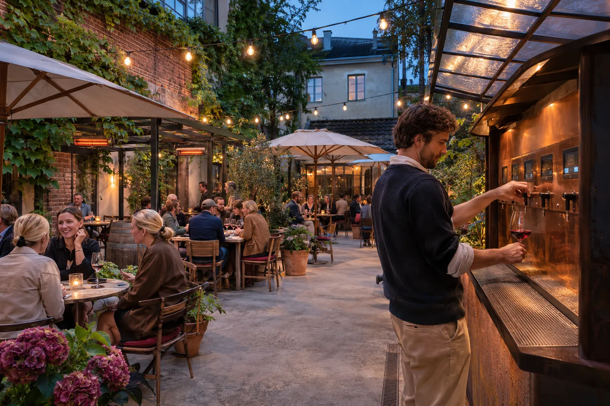
kr eks. mva, estimat fra 170 timer. Timepris kr 1 400.
Hele tilbudet ligger på en egen side. Der finner dere tilnærmingen, hva konseptfasen leverer, hvordan vi jobber, honoraret linje for linje, opsjonene frem til åpning, rammen på 3 MNOK, tidsplanen og vilkårene.
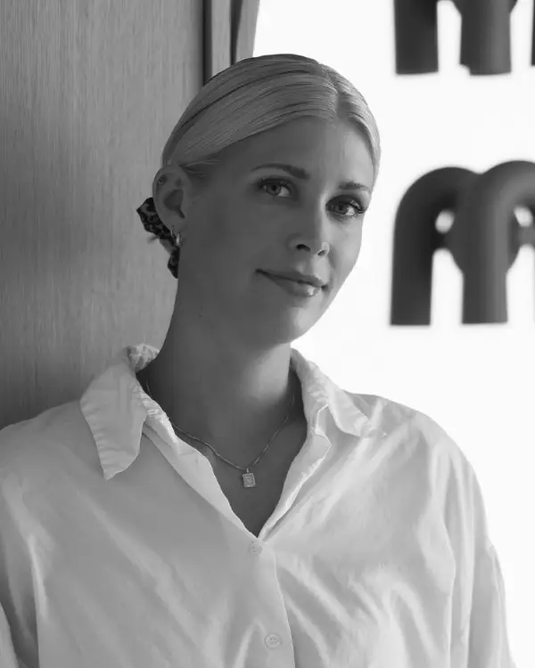
Interiørarkitekt MNIL, partner
+47 995 50 001
camilla@monn.no
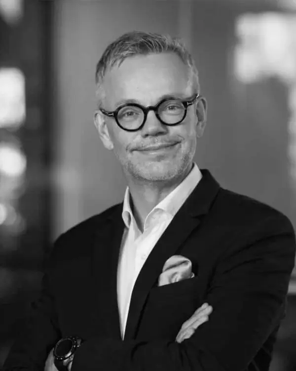
Interiørarkitekt MNIL, partner
+47 924 41 305
trond@monn.no
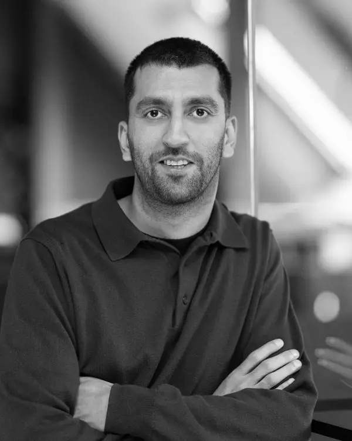
Interiørarkitekt MNIL
+47 900 38 650
murad@monn.no